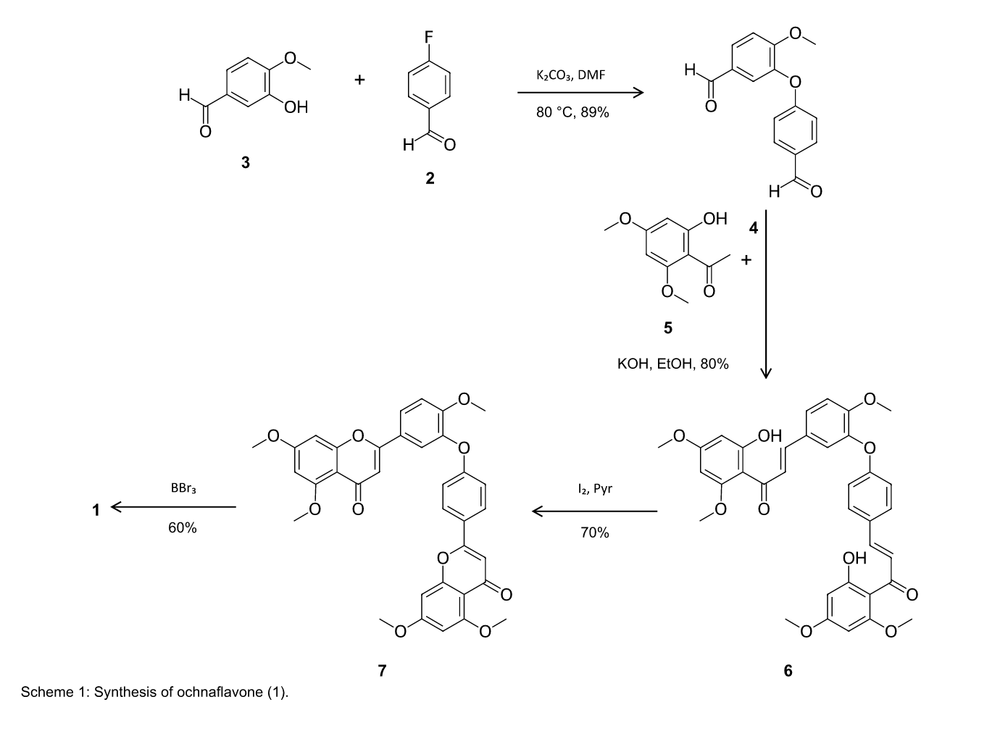

原生路线 · 更新前
- 分子图
- 6/6
- 步骤拓扑
- 3/4
- 主箭头方向
- 1/4
- 分步收率
- 3/4
- 线条位置 F1（3 像素容差）
- 7.9%
- 归档工具调用
- 34 次
按图上编号核对，6 个分子中 6 个结构正确。4 步中原生连接正确 3 步，实际箭头方向正确 1 步，收率印在对应反应上的有 3 步。末步编号 1 没有作为独立的反应端点。渲染器报告 0 条显示对象重叠。图面排成三行，4 和 6 重复出现。最后一步的 BBr₃ 与 60% 被挤在第三行最右侧的小字里。
两种原料合成 4，随后与 5 反应。下排箭头由右向左，最后以编号 1 表示目标物。
盲测使用同一张论文图。线条位置 F1 在 960 × 960 像素画布上计分，位置容差为 3 像素。

按图上编号核对，6 个分子中 6 个结构正确。4 步中原生连接正确 3 步，实际箭头方向正确 1 步，收率印在对应反应上的有 3 步。末步编号 1 没有作为独立的反应端点。渲染器报告 0 条显示对象重叠。图面排成三行，4 和 6 重复出现。最后一步的 BBr₃ 与 60% 被挤在第三行最右侧的小字里。
按图上编号核对，6 个分子中 6 个结构正确。4 步中原生连接正确 4 步，实际箭头方向正确 4 步，收率印在对应反应上的有 4 步。末步终点 1 已作为独立编号画出。渲染器报告 7 条显示对象重叠。4 和 5 在向下的箭头旁仍可辨认，7 与底部图注也能分别阅读。两枚加号被移到相同位置，叠成了第一行的一枚。
按图上编号核对，6 个分子中 6 个结构正确。4 步中原生连接正确 4 步，实际箭头方向正确 4 步，收率印在对应反应上的有 4 步。末步终点 1 已作为独立编号画出。渲染器报告 7 条显示对象重叠。4 的编号紧靠纵向箭杆；5 与箭杆之间多印了一枚加号。末端编号 1 与箭头间距很窄，仍可分别读出。
仅收到论文原图。末端保留编号 1，图上可见的化学结构由普通线条和文字组成。归档未提供可独立验证的分子连接表。
同一幅多步合成路线增加了一次普通 SVG 盲测。分步检查箭头、对应收率、条件与画出的结构特征。原生版本另有可比对的分子和反应记录。